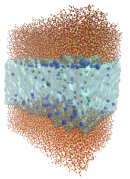

Effect of an external electric field on capillary filling of water in hydrophilic silica nanochannels

Abstract
A comprehensive understanding of fluid dynamics of dilute electrolyte solutions in nanoconfinement is essential to develop more efficient nanofluidic devices. In nanoconduits, the electrical double layer can occupy a considerable part of the channel cross-section, therefore the transport properties of a nanoconfined electrolyte solution can be altered by interfacial phenomena such as the charge inversion (CI). CI is an electrokinetic effect that has been associated with the presence of hydrated multivalent cations in nanoconfinement. Here, all-atom molecular dynamics simulations are employed to study the structure and dynamics of aqueous multivalent electrolyte solutions within slit-shaped silica channels. All simulations are conducted for more than 100 ns to capture the equilibrium ion distribution, the interfacial hydrodynamic properties, and to reveal the influence of CI on nanoconfined fluid transport. The electrolyte solutions consist of water as solvent, chloride as co-ion and different counter-ions, i.e., sodium, magnesium and aluminum. We find that the interfacial viscosity is correlated to the concentration and valence of the counter-ions in the solution. Our results suggest that higher CI is correlated to the presence of a layer of fluid with augmented viscosity adjacent to the channel wall. As the thickness of this interfacial high-viscosity fluid increases, lower flow rates are measured while higher interfacial viscosities and friction coefficients are computed.
Back